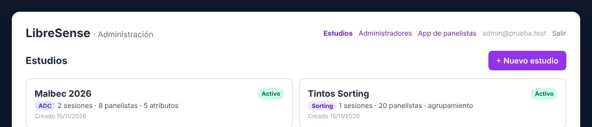
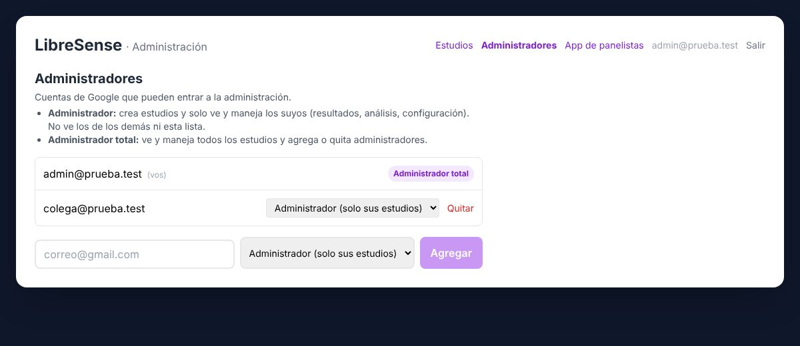

LibreSense es una aplicación web para hacer evaluaciones sensoriales. Reemplaza las planillas en papel y los programas comerciales en las tareas más habituales de un laboratorio o una bodega: armar el diseño del estudio, codificar las muestras, que cada panelista evalúe desde su celular, tablet o computadora, seguir el avance en tiempo real y obtener los resultados listos para analizar.
Tiene dos partes que se usan con la misma dirección:
Para el análisis más completo, cada técnica que lo necesita tiene además una aplicación en R (Shiny) que se abre con un botón desde la administración y lee los datos del estudio directamente, con los métodos estadísticos de la bibliografía (FactoMineR, SensoMineR).
| Parte | Dónde está | Qué guarda |
|---|---|---|
| App (panelistas y administración) | GitHub Pages, gratis | Nada: es solo la página |
| Base de datos | Google Firebase (Firestore), plan gratuito, servidores en San Pablo | Estudios, diseño, respuestas y progreso |
| Inicio de sesión de administradores | Firebase Authentication con Google | Quién puede administrar |
| Análisis completo | shinyapps.io (cuenta propia) | Nada: lee los datos en el momento |
Las reglas de seguridad de la base de datos están del lado del servidor: un panelista solo puede agregar respuestas a estudios activos y con el formato correcto, y no puede leer los nombres de los vinos ni las respuestas de otros. Los nombres reales de las muestras solo los ven los administradores.
La app del panelista guarda cada respuesta primero en el dispositivo y la sube sola en cuanto hay conexión. Si se corta el wifi en la sala de cata, se puede seguir evaluando: el indicador “Todo guardado en la nube” cambia a “pendiente” y vuelve a verde cuando se sincroniza. Lo único que hace falta es haber abierto el estudio una vez con conexión.

Hay dos tipos de administrador. Se eligen en Administradores (menú superior), al agregar el correo de Google de la persona:
| Rol | Qué puede hacer |
|---|---|
| Administrador total | Ve y modifica todos los estudios (con el nombre de quien creó cada uno), agrega y quita administradores y cambia sus roles. |
| Administrador (solo sus estudios) | Crea estudios y solo ve, modifica, analiza y borra los que creó. No ve los estudios de otros ni la sección Administradores. |

El administrador total puede hacer visible un estudio para administradores puntuales: en el estudio, Configuración → Compartir con administradores, marcar a quiénes y tocar Guardar. Esos administradores lo ven en su lista con la etiqueta “Compartido con vos · solo lectura” y pueden mirar el progreso, la planilla de servicio, el análisis en vivo, los resultados (y descargarlos) y abrir el análisis en R. No lo pueden modificar, cerrar ni borrar: no tienen la pestaña Configuración. Para dejar de compartirlo, se desmarca y se guarda.
La controla la base de datos. Un administrador “solo sus estudios” no puede leer datos de otros estudios aunque lo intente por otro camino; tampoco desde las apps de R, que leen los datos con el permiso de quien las abre. Los estudios creados antes de que existieran los roles no tienen dueño y solo los ve el administrador total.
LibreSense tiene seis técnicas. Se diferencian en quién evalúa (panel entrenado o consumidores), cómo se presentan las muestras (de a una o todas juntas) y qué información dan (intensidades de atributos definidos, frecuencias de términos, o un mapa de parecidos).
| Técnica | Panel | Muestras | El panelista… | Resultado principal |
|---|---|---|---|---|
| ADC | Entrenado, 8–12 | De a una, Williams | Puntúa cada atributo en una escala 0–10 | Medias, ANOVA, PCA |
| RATA | Entrenado o semi; también consumidores | De a una, Williams | Marca los descriptores presentes e indica bajo/medio/alto | Frecuencias e intensidades, PCA |
| CATA con aceptabilidad | Consumidores, 50–100+ | De a una, Williams | Dice cuánto le gusta y marca los términos que la describen | Agrado, frecuencias, mapa, penalidades |
| Perfil Flash | Semi-entrenado o expertos, 5–10 | Todas juntas, letras | Crea sus descriptores y ordena las copas en cada uno | Mapa de consenso (AFM) |
| Napping | Cualquiera, 10–30 | De a una, luego juntas en la hoja | Ubica las muestras en una hoja: cerca = parecidas | Mapa de consenso (AFM) |
| Sorting | Cualquiera, 15–30+ | Todas juntas | Arma grupos de muestras parecidas | Mapa (MCA, DISTATIS), grupos |
Las técnicas “rápidas” (Flash, Napping, Sorting, CATA) no reemplazan al ADC cuando se necesitan intensidades precisas y comparables en el tiempo, pero dan en una o dos sesiones un panorama que el ADC da después de semanas de entrenamiento. En la bibliografía (Varela y Ares, 2014) los mapas que producen suelen ser parecidos a los del perfil clásico cuando las diferencias entre muestras son claras.